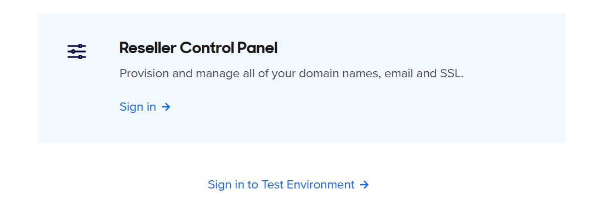
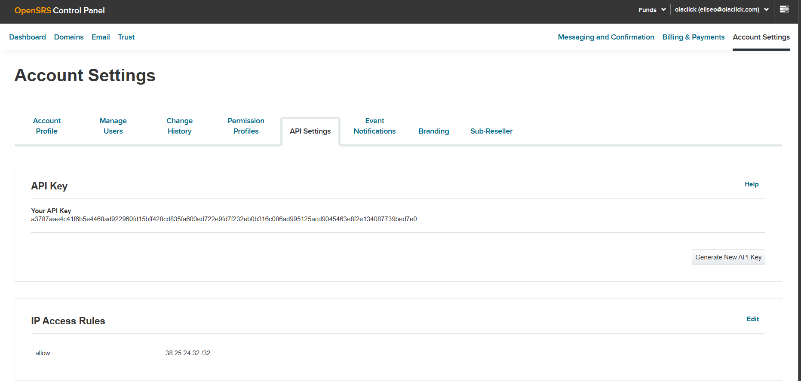

Documentación de la Aplicación - Dominio Propio
Table of Contents
1. Objetivo
El objetivo del proyecto es desarrollar una aplicación (Microservicio) que permita crear dominios y conectarlos con los servidores web de Host.
2. Detalle de funcionalidades a implementar
La aplicación tendrá las siguientes funcionalidades:
- La aplicación será un Microservicio para la creación de dominios.
- La aplicación creará dominios en la plataforma TUCOWS.
- La aplicación creará dominios y certificados SSL en AWS que serán relacionados mediante CloudFront al sistema de Host.
- El sistema configurará los dominios en TUCOWS para que usen los DNS de AWS de los dominos creados allí.
- El sistema informará diaramente mediante un reporte enviado a un correo brindado por el Host sobre el estado de los dominios que iniciaron el proceso de creación.
- El sistema actualizará los certificados automaticamente cada año en dominios con formato restaurante.com.pe.
3. Manual de instalación
3.1. Requisitos del la aplicación
Para instalación de la aplicacón se require:
- Docker.
- MySQL 5.7 o superior.
- Git.
- IP fijo a configurar en Tucows.
3.2. Proceso de instalación
3.2.1. Código fuente:
Descargar el código fuente de: https://gitlab.com/aitodev/qlickmenu/micro-services/domain-registration en la ubicación del servidor.
3.2.2. Configuración de la base de datos:
Cree una base de datos en MySQL con collation utf-8
create database db_multidomain character set utf8
Guarde el host, puerto, y credenciales de acceso para los siguientes pasos.
3.2.3. Configuración de la aplicación:
En la carpeta de la aplicación crear el archivo .env el cual puede ser copiado de .env.sample :
cp .env.sample .env
Luego editamos el archivo .env con los valores requeridos
APP_VERSION=1.0.0 PORT=Puerto por donde correra el servicio web AWS_ACCESS_KEY= AWS access key para conectarse al cli de AWS AWS_SECRET_KEY= AWS secret key to connect with aws cli TUCOWS_RESELLER_USERNAME= Usuario de acceso Tucows TUCOWS_API_KEY= API key de acceso a Tucows TUCOWS_API_HOST_PORT= URL de acceso a Tucows MASTER_CLIENT_USER= Usuario por defecto para acceso de los dominios creados MASTER_CLIENT_PASS= Clave de acceso por defecto para acceso a los dominios creados MASTER_CLIENT_DEFAULT_PERIOD= Periodo por defecto de creación del dominio 1: año, 2: 2 años, 3: 3 años 2 años, 3 = 3 años> MASTER_CLOUDFRONT_ID= Id del dominio a configurar en Cloudfront, puede poner la url del ELB de Host MASTER_CLOUDFRONT_DOMAINNAME= Url del dominio a configurar en Cloudfront, puede poner la url del ELB del Host MASTER_CLOUDFRONT_TARGETORIGINID= Url de el host destino a configurar en Cloudfront, puede poner la url del ELB del Host PANEL_API_URL= Url de Host para ifnromar del estado del dominio ALLOWED_ORIGINS= Urls que tienen acceso a los servicios web. Ejm: * (Todos), http://web1.com,http://web2.com DB_HOST= Host de la base de datos DB_PORT= Puerto de conexión de la base de datos DB_DATABASE= Nombre de la base de datos a conectarse DB_USERNAME= Usuario de acceso a la base de datos DB_PASSWORD= Clave de acceso a la base de datos
- Entorno de desarrollo
Los datos para el entorno de desarrollo de Tuwocs serían:
TUCOWS_RESELLER_USERNAME=
TUCOWS_API_KEY= TUCOWS_API_HOST_PORT=https://horizon.opensrs.net:55443 - Entorno de producción
Los datos para el entorno de producción de Tucows serían:
TUCOWS_RESELLER_USERNAME=
TUCOWS_API_KEY= TUCOWS_API_HOST_PORT=https://rr-n1-tor.opensrs.net:55443
3.2.4. Configuración de Tucows
Para configurar Tucows es necesario acceder a Tucows en la URL https://opensrs.com/integrations/api/ , esta url nos brinda la opción de acceder al entorno de desarrollo y producción

En el entorno de producción es necesario añadir añadir la IP que tendra permisos para llamar al API de Tucows, esto se realiza en Account Setting > API Key

3.2.5. Puesta en marcha
Luego de configurada la aplicación podemos ejecutarla utilizando Docker:
docker run -p 5000:5000 --restart always --name md_one_server --link multi-mysql:db md_one
Realizamos una prueba rápida de la aplicación:
curl --location --request GET 'http://localhost:5000/public/v1/health'
como respuesta tendremos
{
"message": "Domain Registration service v1.0.0"
}
El último valor del mensaje nos debe indicar la versión con la que se esta trabajando.
4. API
4.1. Métodos
4.1.1. Health (/public/v1/health)
Valida el estado del API
- Forma de uso
curl --location --request GET 'http://localhost:5000/public/v1/health'
- Parámetros de envío
Ninguno
- Respuesta
Status code 200
{
"message": "Domain Registration service v1.0.0"
}
4.1.2. Validate domain (/auth/v1/domain/validate)
Valida si el dominio esta libre para su uso.
- Forma de uso:
curl --location --request POST 'http://localhost:5000/auth/v1/domain/validate' \
--header 'content-type: application/json' \
--data-raw '{
"domain" :"mydomain.online"
}'
Parámetros de envío
Parámetro Tipo Tamaño Requerido Detalle domain cadena 64 x Dominio a verificar - Respuesta
Status code 200: Dominio libre
{
"message": "Ok"
}
Status code 400: Dominio ocupado
{
"message": "Domain taken"
}
4.1.3. Create domain (/internal/v1/domain/create)
Inicia el proceso de creación de un dominio
- Forma de uso
curl --location --request POST 'http://localhost:5000/internal/v1/domain/create' \
--header 'content-type: application/json' \
--data-raw '{
"domain" :"mydomain.com",
"company_id": "AA001",
"first_name": "Juan",
"last_name": "Carbajal",
"phone" : "+51.952713764",
"fax" : "+051.952713764",
"email" : "juancarbajal@gmail.com",
"org_name": "Juan Carbajal",
"address1": "Belaunde 353",
"address2": "Trujillo",
"address3": "",
"city": "Trujillo",
"state": "Trujillo",
"country": "PE",
"postal_code": "00001"
}'
Parámetros de envío
Parametro Tipo Tamaño Requerido Detalle domain cadena 64 x Dominio a registrar companyid cadena 64 x Identificador del comercio o compañía firstname cadena 64 x Primer nombre del comprador lastname cadena 64 x Apellido del comprador phone cadena 20 x Telefono del comprador con formato +<codigo pais>.<número> fax cadena 20 x Número de fax del comprador, Puede ser el mismo que el teléfono email cadena 64 x Correo electronico del comprador orgname cadena 64 x Nombre del comercio o compañía address1 cadena 64 x Dirección de comercio o compañía address2 cadena 64 Dirección 2 del comercio o compañía (segunda parte de la dirección) city cadena 64 x Nombre de la ciudad state cadena 64 x Código de 2 letras del estado del comercio o compañía country cadena 2 x Código ISO del pais del comercio o compañía postalcode cadena 64 x Código postal del comercio o compañía documenttype cadena 64 Tipo de documento requerido en méxico (curp, ci), argentina (dni, cuit) documentnumber cadena 64 Número de documento, requerido en brazil (cpnj) y argentina Respuesta
Status code 200: Proceso iniciado con exito
Status code 400: Proceso fallo al iniciarse
5. Cron
El cron es el encargado de realizar el proceso de creación de los dominios.
Cada 5 minutos revisa el estado actual de las peticiones y continua con el proceso de creación y configuración del dominio.
Para revisar el estado de logs
docker logs <container id>
Para ver el id del contenedor ubicarlo utilizando "docker container ls"